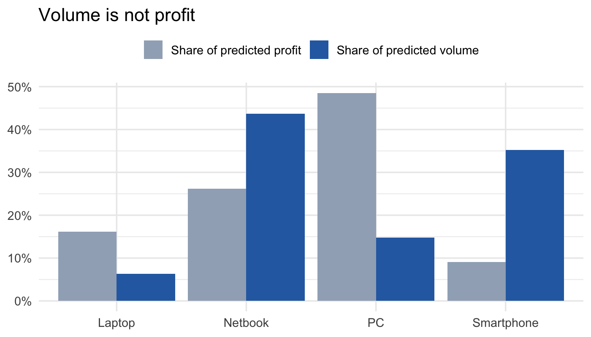
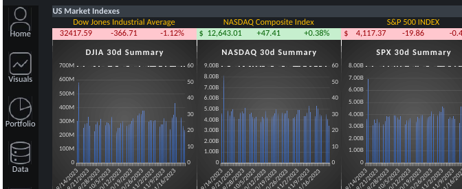
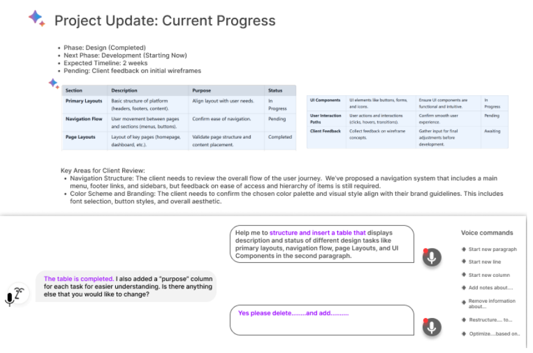
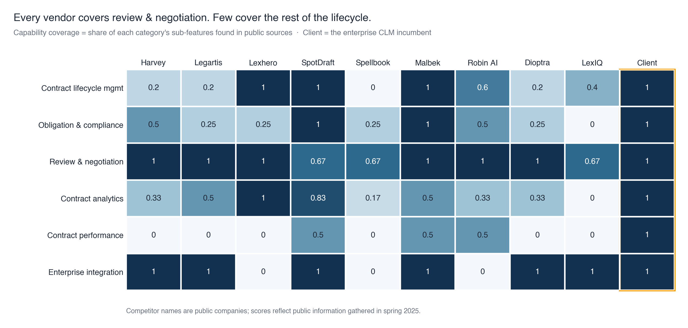
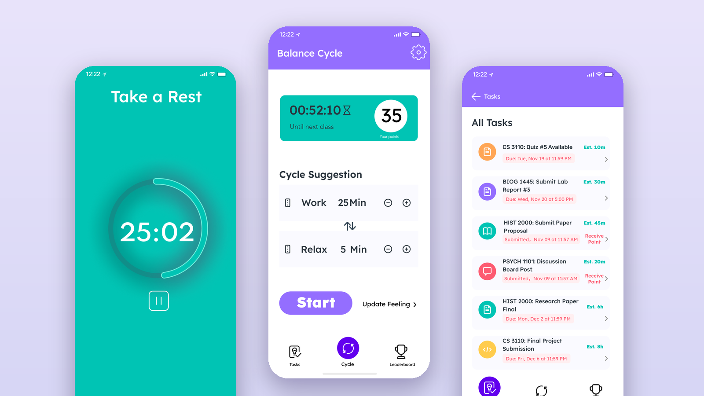

Business and data analyst.
I turn messy data and unclear requirements into analyses, dashboards and product decisions that teams can act on.
- SQL
- Python
- R
- Tableau
- Power BI
- Excel & VBA
- Snowflake
- Databricks
- dbt
- A/B testing
- Funnel & cohort analysis
- Pricing
- Requirements
- Process mapping
- LLM evaluation
Selected work
Selected projects

Data · Python · Tableau
FDA Compliance Data Product
Five scattered FDA sources merged into one searchable dashboard for a hygiene services company, with a refreshable pipeline and the patterns it surfaced.
Read case study
AI · Evaluation
LLM Review Scorer
An eval for an LLM that turns review text into star ratings. A one-line prompt beat the carefully engineered one at a tenth the cost — and a blind human baseline showed where the ceiling really is.
Read case study
Data · ML · R
Predictive Analytics in R
Brand preference, new-product sales forecast and a market basket analysis. Found a data leak, and chose a model on forecast sanity, not just RMSE.
Read case study
Data · Excel · VBA
Portfolio Optimizer
An interactive Excel dashboard on live market data where a beginner builds a diversified portfolio and sees exactly how it was built.
Read case studyData · Marketing analytics
Marketing Analytics
A marketing analytics project built on Databricks SQL, dbt and GA4. The full write-up is in progress.
Case study in progress
Product · AI
Notion Voice AI
A product concept for voice-driven creation and editing in Notion: survey-led scope, pricing, a go-to-market plan, and a GenAI willingness-to-pay simulation whose limits I document.
Read case study
AI · Competitive strategy
GenAI Threat Radar
An LLM agent that scores GenAI startups entering contract management, plus a sized view of the AI-negotiation market and a Buy / Build / Watch call.
Read case study
Product · User research
BalancePoint
A break-balancing app concept for graduate students: interviews, persona, paper and Figma prototypes, and a usability test. Includes the trade-off we made and what we left unsolved.
Read case studyCapabilities
Skills
- Data & analysis
- SQLPython (pandas)RETL / ELT & dbtAPI ingestionClassification & regressionCross-validationAssociation rulesData quality & leakage checks
- Dashboards & BI
- TableauPower BI / DAXExcel & VBASnowflakeBigQueryDatabricksFigmaLucidchart
- AI & LLMs
- LLM agentsPrompt engineeringDatabricks GenieAI-assisted automation
- Product & market
- A/B testingActivation & conversion metricsCompetitive analysisMarket sizingPricing & monetizationEquity research
- Marketing & growth analytics
- Attribution (CAC / ROAS)Incrementality & holdout testsFunnel & cohort analysisChurn, retention & LTVSegmentationGA4Revenue forecasting
- Business analysis
- Requirements elicitationBRD / FRDUse casesProcess mapping (BPMN, swimlane)UML & ERDGap & root-cause analysisStakeholder facilitationUAT
- Product ownership & delivery
- Backlog prioritizationUser stories & acceptance criteriaAgile / ScrumWaterfall / SDLCSprint planningRACIJiraConfluenceLinear
Where I have worked
Experience
- Aug 2025 – present
Business & Product Analyst · Deep Brain Tech
Led a 3-person team on a learning platform's product and growth decisions: requirements and process design, plus funnel, acquisition, retention and pricing analysis, experimentation and self-serve reporting.
- Feb – Jul 2026
Data Analyst · Vision Drive Technology
Primary business analyst for a driving-school CRM, focused on workflow automation and KPI dashboards: scoped requirements and automated onboarding, scheduling and contract-signing.
- May – Aug 2025
Product Owner Intern · Sports Excitement
Product Owner for a youth sports platform across two cross-functional teams: gathered business requirements, refined the backlog into epics and user stories, and ran sprint delivery and root-cause reviews.
- Jan – May 2025
Capstone, FDA compliance analytics · Ecolab
Capstone for Ecolab on FDA food-inspection data: turned stakeholder reporting needs into compliance KPIs, validation rules, an ETL pipeline and self-service Tableau dashboards.
- Jul – Sep 2024
Data Analyst Intern · Baynovation
Built the data and reporting layer for a consumer-lending team: ETL over millions of mortgage and delinquency records, a star-schema warehouse, automated weekly reporting and Power BI risk dashboards.
- May – Jul 2023
Business Analyst Intern · Lions Financial
Hotel-market benchmarking and valuation work: Snowflake SQL on competitive-set data (ADR, occupancy, RevPAR), DCF and comparable-company models in Excel, and Tableau dashboards.
Contact
Get in touch
Open to Business Analyst, Data Analyst, Product Analyst, Project / Product Management, and Growth and Marketing Analytics roles.